ppm, peakwidth, snthresh, prefilter, mzCenterFun, integrate, mzdiff, fitgauss, scanrange, noise.
Feature detection with xcms requires assay- and
instrument-specific parameter tuning. The sections below summarise the
role of each parameter in the centWave algorithm and
provide practical guidance for choosing sensible starting values.
| Parameter | Description | Suggested starting value |
|---|---|---|
| ppm | Allowed signal deviation in the m/z dimension | 25 |
| peakwidth | Expected range of chromatographic peak widths (seconds) | 3-15 s |
| snthresh | Minimum signal-to-noise ratio | 2 |
| prefilter | Minimum number of points above a defined intensity threshold | k=3, I=100 |
| mzdiff | Minimum m/z separation for overlapping peaks | 0.001 |
| noise | Intensity threshold below which signals are ignored | 75th percentile |
| mzCenterFun | Function used to calculate the peak m/z value | wMean |
| integrate | Method used for peak integration | 1 |
| fitgauss | Whether to fit a Gaussian peak model | FALSE |
| scanrange | Restrict peak picking to a scan interval | numeric(0) |
ppm: Allowed signal deviation in m/z dimension
This centWave parameter ppm specifies the tolerance in m/z values for defining a signal in m/z dimension. This parameter is closely related to the mass accuracy of the mass spectrometer, which is traditionally expressed in parts per million (ppm).
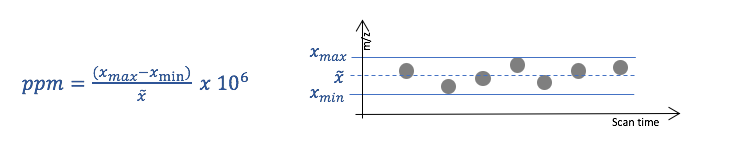
Higher ppm values allow greater variability in m/z and usually increase the number of detected features, but they may also increase the number of false positives. Lower values can lead to missing signals, since the measured mass values may deviate from the true mass more than expected (this is common).
The illustration below shows a peak picking example using the same LC-MS data, where ppm parameter value was varied while all other centWave parameters were held constant.
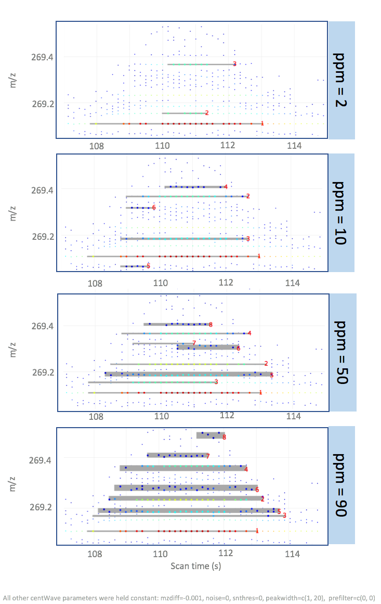
mzdiff: Accepted closeness of two signals in m/z dimension
The mzdiff parameter specifies the allowed minimum distance of two co-eluting peaks in m/z dimension. An mzdiff value of 1 indicates that the m/z value of two signals with overlapping scan time (=retention time) be at least 1 m/z, in order for both signals to be included in the result peak list.
The centWave mzdiff parameter can also take negative values, indicating that the same data point can be allocated to two different peaks. Assigning negative mzdiff values has implications for further downstream processing steps, e.g., establishing correspondence of overlapping peaks across different samples.
Below is an example using the same data processed with mzdiff values of 1 and 0.01.
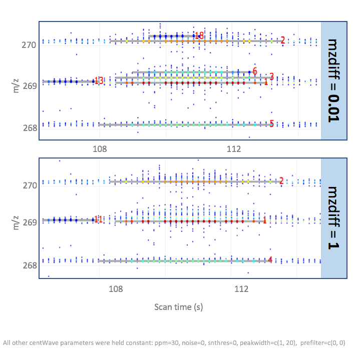
noise: Intensity cut-off, values below are not considered
In many mass spectrometers, ion detection is based on electron-multiplier or related detector technologies. These instruments are highly sensitive and produce electronic noise, which is visible as (usually) random data points below a certain intensity cut-off.
The noise structure of LC-MS spectra generated with mass specs of different types and from different vendors (incl. software updates) can be inherently different, with mz-value dependent noise intensities. Therefore, this parameter requires careful adjustment for each mass spectrometer setup. Lower values increase centWave computation time, higher values lead to missing out true ion signals.
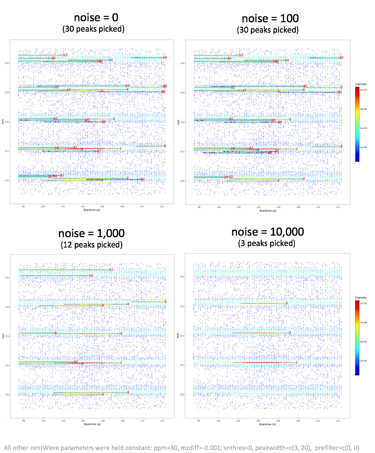
snthresh: Threshold of signal to noise ratio
Closely related to the noise structure is the snthresh parameter, allowing to set a minimal signal to noise ratio (S/N) for peaks to be detected. snthresh builds on an S/N estimate that defines noise intensities locally in the scan time dimension:
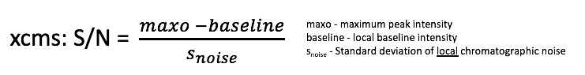
This local S/N definition can be problematic when noise is not homogeneous across the m/z dimension. The example below shows that higher intensity signals are discarded with higher snthresh values, likely because nearby high-intensity noise points inflate the local noise estimate around the signal trace. The final peak list using a high snthresh parameter value contains signals of low intensities, which is somewhat unexpected. UPDATE: THIS BEHAVIOUR IS ONLY OBSERVED WHEN CENTWAVE FUNCTION IS PARAMETERISED WITH THE SCANRANGE ARGUMENT (such as in MSbrowser).
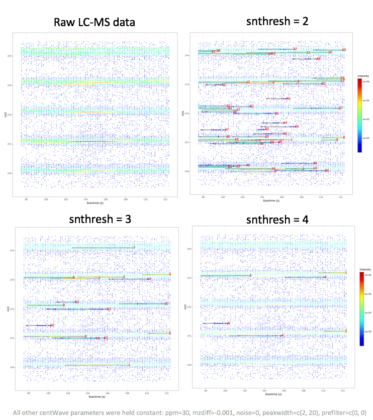
peakwidth: Range of peak elution times
The peakwidth parameter specifies the minimum and maximum peak elution time in seconds. The optimal peakwidth parameter values are related to the MS1 scan rate. Literature suggests a minimum number of six data points per peak in order to obtain reliable peak quantifications. Example: If a low intensity compound elutes over 1s, then the number of instrument scans should be at least 6 per second.
Increasing the lower bound or decreasing the upper bound of peakwidth makes peak detection more restrictive and can reduce the number of detected features, especially for peaks with unusually short or long elution profiles. To find optimal peakwidth parameter values, it is useful to visually inspect elution times for high and low intensity ions in different spectral regions.
The example below shows the results of centWave peak picking performed with different peakwidth parameter values and where all other parameters were held constant.
An unexpected algorithm behaviour was observed when setting the minimal elution time to a value of 1, which resulted in peak splitting of a coherent signal which was not split with higher peakwidth values.
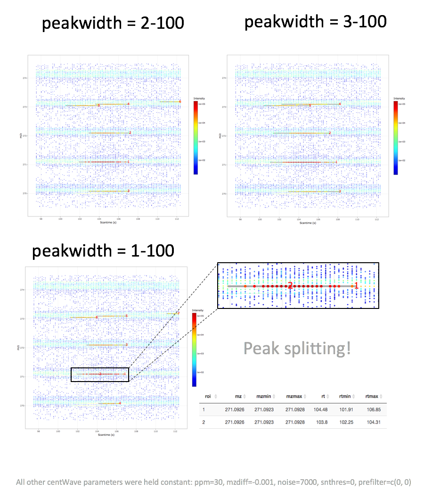
prefilter: Number of data points (k) exceeding a certain intensity threshold (I)
The prefilter parameter is similar to the noise parameter, but instead of specifying an intensity cut-off, it specifies a minimal number of data points (k) that exceed a certain intensity value (I). A signal is discarded if it is represented by less than k consecutive data points of intensity I.
Lower prefilter values are less stringent and allow more low-intensity candidate signals to pass the initial filter, which can increase computation time. Literature suggests a minimum number of six data points per peak in order to obtain reliable peak quantifications (then also depending on the scan frequency)
The values of this parameter strongly depend on the characteristics of well-behaved LC-MS signals. This parameter should not be set too stringently as it can lead to discarding true positive signals.
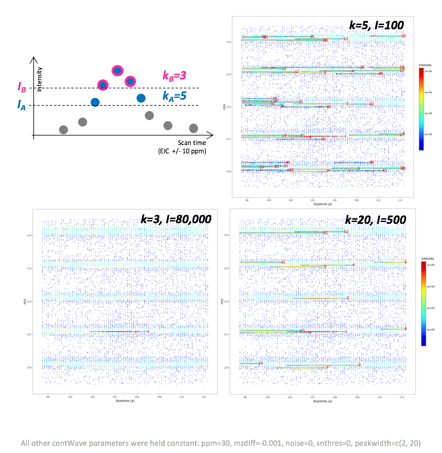
mzCenterFun: m/z summary statistic of a peak
In the final LC-MS feature table, each feature is characterised by a scan time and m/z value. The latter represents a summary statistic of all data points defining a feature, where each one has a slightly different m/z value (see also ppm parameter). The mzCenterFun parameter specifies the m/z summary statistic of a feature. In practice, the different mzCenterFun options have very little impact.
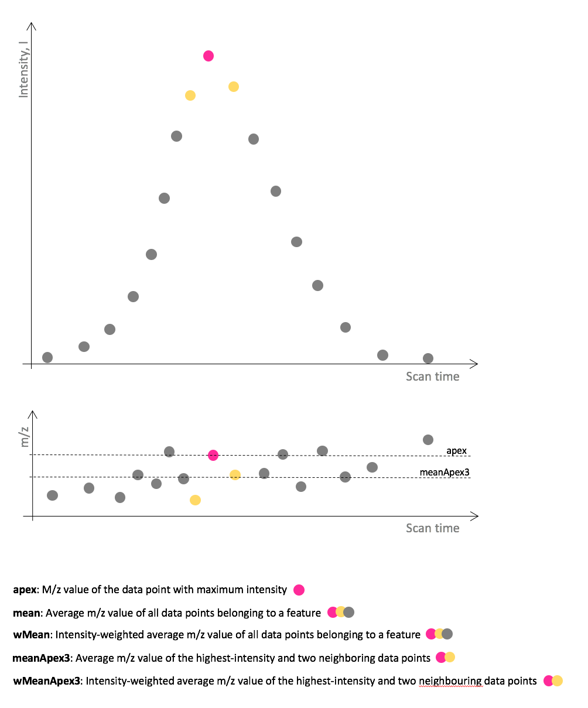
integrate: Integration method for peak quantification
The integrate parameter specifies whether peak boundaries and integration are based on the original data (1) or on the wavelet-transformed signal (2) (upper and lower panel, respectively, in the plot below). The former is sensitive to outliers and noise, since centWave defines left and right peak boundaries through change in slope (see Figure below). The latter is less sensitive to noise, however, the wavelet-filtered data is less exact and can lead to signal mis-representations.
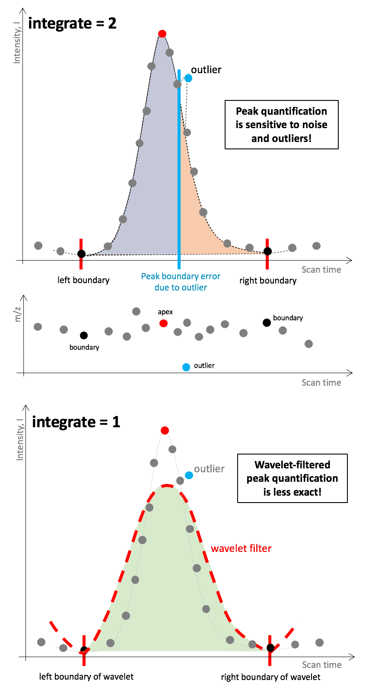
fitgauss: Peak parameterisation using Gaussian distribution
A Gaussian function resembles a characteristic symmetric “bell curve” shape, which is often described as a normal distribution. If this centWave parameter option is set to TRUE, a Gaussian is fitted to each feature. According to the xcms documentation, this parametric fit mainly affects the estimated retention-time position of the peak.
scanrange: Perform peak picking in a specific scan range
The scanrange parameter allows to define a reduced scan/retention time interval for which peak picking will be performed over the entire m/z range. Spectral data outside this scan time interval are not considered. Parameter scanrange is specified in scan indices rather than seconds.
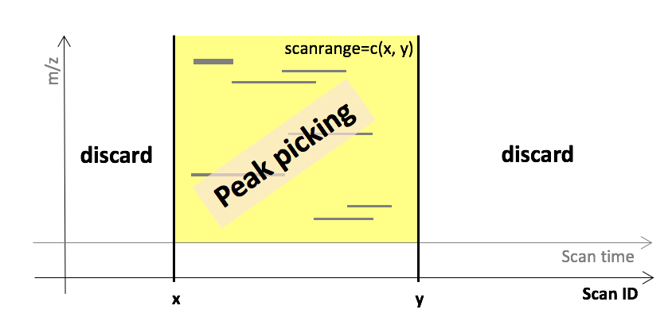